5．高阶方程
1734年12月，丹尼尔·伯努利给当时在圣彼得堡的欧拉写信说，他已经解决了一端固定在墙上而另一端自由的弹性横梁（钢的或木的一维物体）的横向位移问题。丹尼尔·伯努利得到微分方程
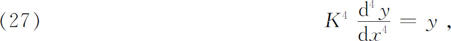
其中K是常数，x是横梁上距自由端的距离，y是在x点的相对于横梁未弯曲位置的垂直位移。欧拉在1735年6月前的一封回信中说道，他也已发现了这个方程，而对这个方程除了用级数外无法积分。他确实得到了四个独立的级数解。这些级数代表圆函数和指数函数，但是欧拉在当时没有了解到这一点。
四年以后，欧拉在给约翰·伯努利的信（1739年9月15日）中指出，他的解可以表示成
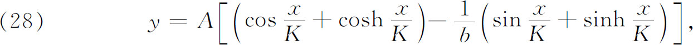
其中b由条件“当x＝l时，y＝0”来确定，从而
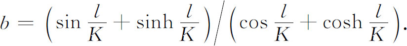
弹性问题促使欧拉考虑求解常系数一般线性方程的数学问题，他在1739年9月15日给约翰·伯努利的信中说，他已经取得成功。约翰·伯努利回信说，他在1700年就已考虑了这样的方程，甚至是变系数的方程。实际上他只考虑过一个特殊的三阶方程，并且证明如何把它化为一个二阶方程。
欧拉在他出版的著作中考虑了方程(32)
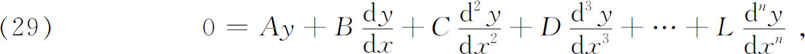
其中系数是常数。这方程由于与y及其微商无关的项等于0，所以叫做齐次的。他指出，通解必定包含n个任意常数，而且是由n个特解分别乘以任意常数后相加而成的。然后他作替换
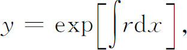
r是常数，从而得到r的方程
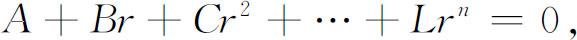
它叫做特征方程或指标方程或辅助方程。当q是这个方程的一个实的单根时，则
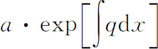
是原微分方程的一个解。在特征方程有重根q时，欧拉令
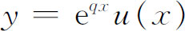
，代入微分方程，他求得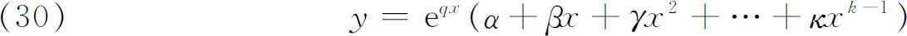
是包含k个任意常数的解，这里k是特征方程的根q的重数。他还讨论了共轭复根和复重根的情形。这样，欧拉完整地解决了常系数线性齐次方程。
稍后他讨论了非齐次的n阶线性常微分方程(33)。他的方法是对方程乘以
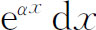
，在两边积分，再去确定α，从而把方程的阶降低。例如，考虑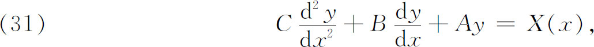
他乘以
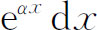
，得到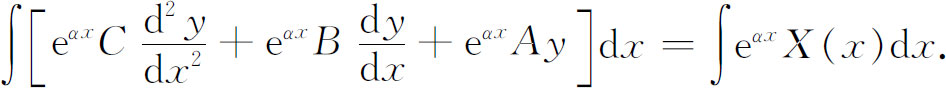
但是左端必定是
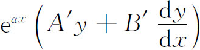
的形式，其中A′与B′是适当的常数。对它进行微分，并与原方程进行比较，他得到
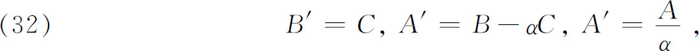
因此，由后两个方程得
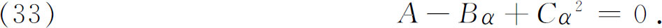
于是可求出α，A′，B′，而原方程化为
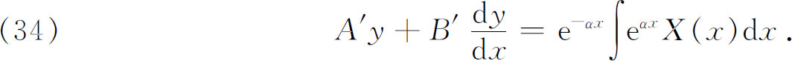
这个方程的一个积分因子是
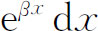
，这里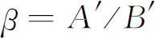
，因此由（32）他得到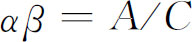
与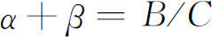
，再由（33）推出α与β是方程（33）的两个根。这个方法应用于n阶常系数的常微分方程，像上述例子一样，可以逐步把方程的阶降低。欧拉还仔细讨论了α满足的方程有重根和复根的情形。
拉格朗日在研究了常系数常微分方程之后，对变系数的方程也迈出了一步(34)。这样就引出了如我们将看到的伴随方程的概念。拉格朗日从下列方程出发：
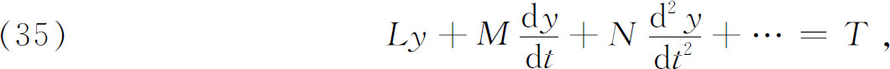
这里L，M，N，…和T都是t的函数。为了简单起见，我们将限于二阶方程。拉格朗日用zdt乘其两端，其中z（t）尚未确定，再分部积分，从而
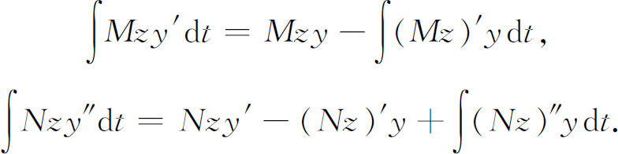
于是原方程变成
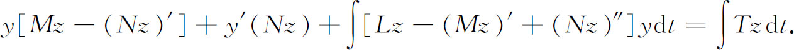
积分号下的方括号，令其等于0，可以看成z的一个常微分方程。如果由它可以求出z（t），那么留下的方程是一个比原方程低一阶的y的常微分方程。这个关于z的新方程，叫做原方程的伴随方程，这个名字是由富克斯（Lazarus Fuchs）在1873年取的，拉格朗日并未给它取名。
为了处理z的方程（伴随方程），拉格朗日用同样的方法去降阶。他用
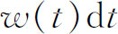
乘两端，重复上述步骤，得到w的一个方程，降低了z的方程的阶。w的方程除了右端等于0外又回到了原来的方程（35）。因此拉格朗日发现了一个定理：原来非齐次常微分方程的伴随方程的伴随方程，就是原来方程对应的齐次方程。欧拉在1778年本质上做了相同的事。他曾经看到过拉格朗日的工作，但显然是忘记了。在对变系数齐次线性常微分方程的进一步的工作中，拉格朗日(35)把欧拉对常系数线性微分方程得到的某些结果推广到这些方程。拉格朗日发现，齐次方程的通解是由一些独立的特解分别乘以任意常数后相加而成的，而且在知道了n阶齐次方程的m个特解后，可以把方程降低m阶。